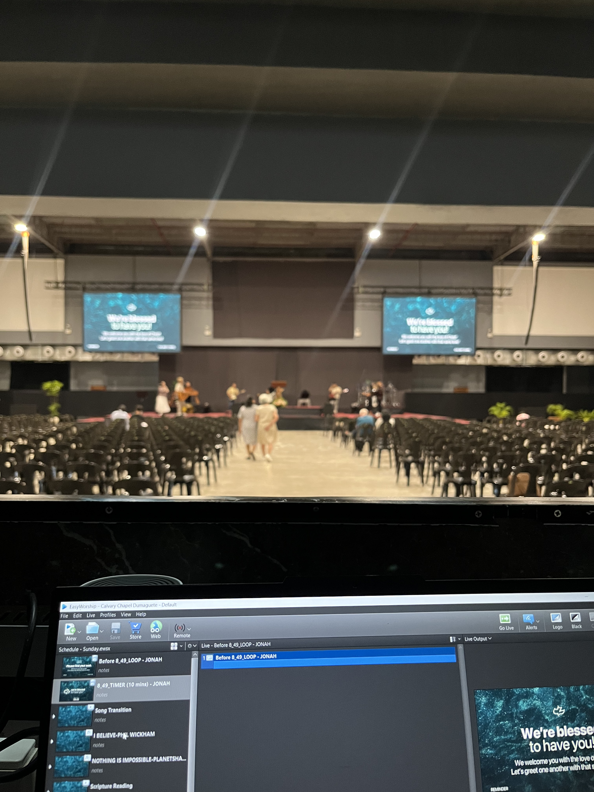
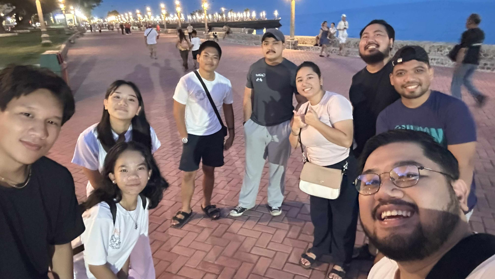
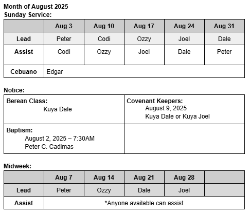

The Youth ministry invites all students (by word of mouth and socmed) to a group bible study any time of the week. It is usually held in Silliman grounds and is easily accessible to Sillimanians and dormers. Sometimes we can cater to those outside of Silliman and pick a neutral venue.
This was a newly revisited event in the youth ministry. The ates and kuyas used to do this during their time in Silliman and I love that we’re now bringing it back for the students now. It is not a long bible study, it is usually an encouragement to the students and then we split off into groups and get opportunities to share anything we need to share and anything that we have learned.
This particular one, the passage was from Matthew 11:25-30 and it was basically about Jesus calling those who are heavy laden to go to Him and He will give them rest. And Jesus explains that the burden we are carrying, we give it to Him and He carries it for us. Which is a timely encouragement for me and the other students because of midterms and preliminary exams.
Sunday Service: Audio Visual Ministry
This particular Sunday, I was assigned by our AV ministry leader, Jonan Kitane, and I remember I couldn’t go to the worship team practice that Saturday because it was the ROTC presentation of sponsors. I ended up making mistakes while showing the lyrics for a particular song on the day (hehe).
The first time I was assigned to a Sunday Service in the AV ministry at church was 2 years ago for the first Sunday of the month of October. I remember I inputted the wrong version of the scripture reading part, and I was showing a different version than the reader. I love this ministry so much, and I know that God is the one who called me into this ministry because I am still serving here. He is the reason why I'm still serving here, and why I have endured.
I’ve now been serving in the ministry for 2 years, and I can honestly say that, I have grown and come a long way since when I first started. I remember how nervous I was, and how scared I was of making mistakes in front of the whole church. And it was our youth pastor who reminded me that it was ok to make mistakes, as long as we learn from them and grow.
Because of this ministry, I have learned to trust in the Lord in everything I do. It is not just about showing media on the led wall on Sunday, but also preparing the materials the day before, late night editing the slides, and overall just acknowledging that everything that we do is for the Lord, and He deserves even more than our best. And that is why we strive for perfection, because our God is perfect.

Sunday Service: Sunday School
Last September was the last time I was assigned in the Sunday School Ministry, until next month. We have 2 teams in the primary class and we just alternate every month. I was assigned many roles, but my favorite role to be assigned that month was arts and crafts/games. It provided the kids with a great opportunity to review what they have learned in the lesson series. I was also assigned for the intro, the memory verse, and preparation.
I first joined the Sunday School primary class in December 2024 and even then I still had doubts whether or not I wanted to continue. I joined because there was an opportunity to join and the team really lacked men and there are challenges when it comes to only girls handling a class of girls and boys from ages 7-9.
But since January, I absolutely love to serve in this ministry because I get to work with kids and some will never understand how special it feels when a kid sees you outside of the classroom and goes out of their way to say hi/hello, and wants to give you something they made or tell you about them and their day. There’s a sense of family and it feels like Im such a “kuya” and it made me realize that, although I tend to avoid this fact, kids will see me as a kuya, and theres a certain responsibility that comes with that.
Because of this ministry, I have learned to be patient and compassionate. I have learned how patient the Lord is with me, and how compassionate He truly is with me. I have learned how to treat kids and to manage my behavior and the words I say. It made me really think about what the words and actions I say and do before I say or do it.
CCD Youth Ministry Street Evangelism at Rizal Boulevard: Battlezone
This particular time, I shared to this one person named Val. I saw him sitting next to a ramp that goes down to the sea in the boulevard, and the Lord just led me to share to this person. Upon sharing to this person, as I went on to keep sharing to the person, I kept asking questions and all of his responses can be summarized as “I don’t really care too much about this” and even after helping him see the urgency of eternity in Heaven or Hell, he just didn’t seem to care.
This was also not the first time I joined “battlezone” and this was also not the first time this kind of thing happened to me. Both times, it just broke my heart and the first time I actually cried when we came back to the circle. It makes us sad to see people reject Christ when we know what Christ has done for us. But God also encourages us to grieve, surrender them to the Lord, and move on. As much as we would want to, we can’t change their heart, only God can. We will simply continue to obey His command to go and make disciples of all nations.

CCD Midweek Bible Study: Soundman
Being a soundman has taught me a lot of things, especially about the tech side of things. I love working in the background, not really seen, but playing a role in the big picture. I love being a soundman because, not only is it fun, but it is about the details and the things that not everyone notices, sees, or hears, but only the soundmen do.
Similar to the AV ministry, the people will not see the things we do right, but they will see the things we do wrong. The goal of these ministries is to be invisible. As if we aren’t there at all, and to make the service as easy to follow to the best of our abilities. I have learned so much in this ministry, and I can even take the things I have learned outside of the ministry and apply them in different situations and events that I am a part of.
It helped me understand their job. I have so much respect for people that do this for a living and those that manage the big concerts and events. Even the minor events when done well.

SU Church Galilean Fellowship
The Galilean fellowship was similar to the Midweek Service in SU Church. It was nice to see fellow freshies gather together at the amphitheater to enjoy the presence of God and have fellowship with one another (although we were required to by our CHS). Nonetheless, it was still nice to see a lot of students together in one place.
My favorite part of the activity was when we transferred to the AH classrooms because of the rain, and we were able to spend time with our respective CHS sections together with divinity school sophomores, juniors and seniors. We played games, and talked about the message.
I hope Silliman University continues to do these kinds of activities, but also incorporating more of the teaching of the word of God more into the activity/event.
SU Church Midweek Bible Study
SU Church Galilean fellowship brought up 2 Kings 19 about the story of Elijah when he was depressed and how the Lord was there for him. I was just in the congregation listening with Justine and following along the service, opening the bible to the verse used in the message, and singing along with the songs.
I was just reminded that, although we are in Christ, we will still feel sadness and depression. The bible doesn’t condemn those feelings, but reminds that the Lord is with us when we feel these feelings that overwhelm us. It just felt nice to be reminded and encouraged with the word of God on a weekday, similar to the CCD Youth Bible study.
I encourage everyone to be refreshed and encouraged with the Lord and His words. It can really make a difference in your attitude and your overall well-being and health.
CCD Youth Service: Worship Team
This friday it was our team’s turn to once again lead worship. I am assigned to 2 teams, every 1st Friday of the month (Roaring Lions), and every 4th Friday of the month (Faithful Panthers). I play the acoustic guitar for both teams, but I don’t sing.
I first joined the worship team in April of 2024, and after some time, I was assigned to 2 teams. We have an inside joke whenever it’s my turn to play guitar, that almost every Friday I play the guitar, there will always be something that goes wrong. Whether the guitar suddenly stops playing, something is wrong with the mixer in the soundbooth, or I can’t hit the chords right.
Regardless of the errors and difficulties that come with serving in this ministry, I love serving here because I get to lead the people to worship Jesus. I get to worship God while also using the talents and skills God gave me. It is also a joy to serve with the fellow servants who also want to worship God.